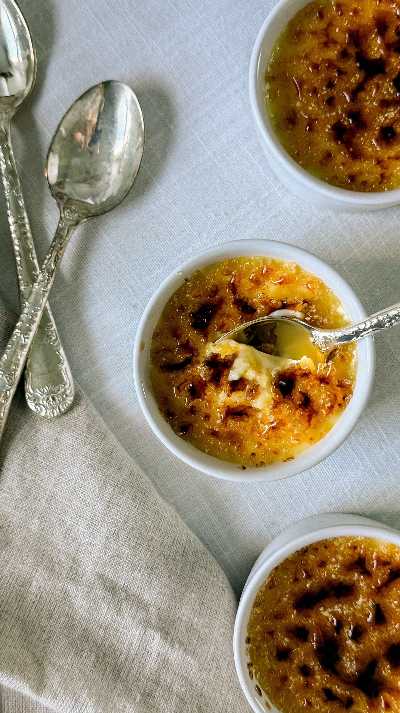

for the moment
by Amanda Turner
Beauty • Food • Travel
Welcome to For The Moment, a lifestyle destination where I share beauty favorites, delicious recipes, restaurant discoveries, travel inspiration, and everyday moments worth remembering.
- Amanda

Honest product reviews, skincare favorites, makeup finds, and beauty routines worth trying.

Fun recipes, restaurant recommendations, local favorites, and memorable dining experiences.
Travel guides, weekend getaways, destination inspiration, and helpful tips.

I'm Amanda Turner, a content creator sharing beauty, food, travel, and the moments that make everyday life memorable.
For The Moment began as a photography business and has evolved into a lifestyle blog dedicated to inspiration, discovery, and storytelling.